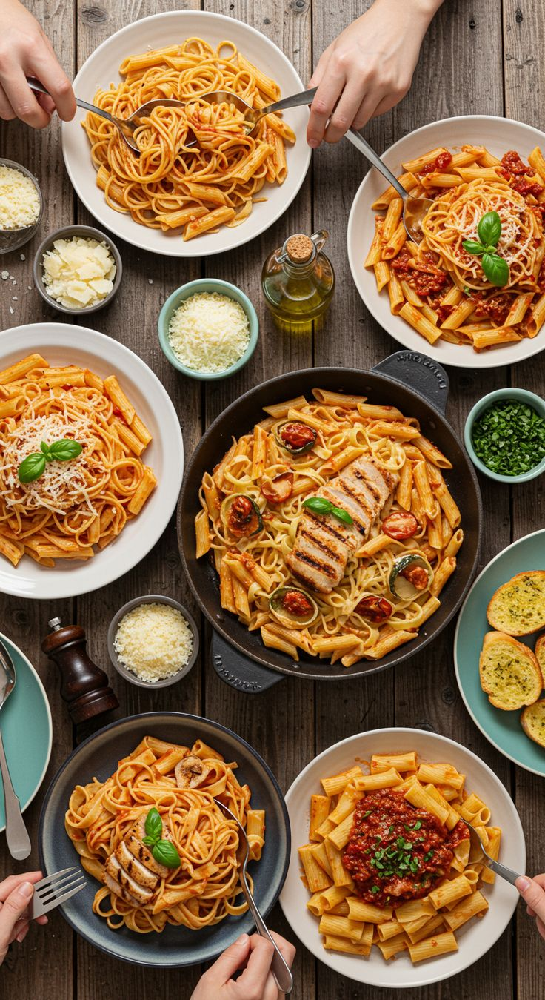
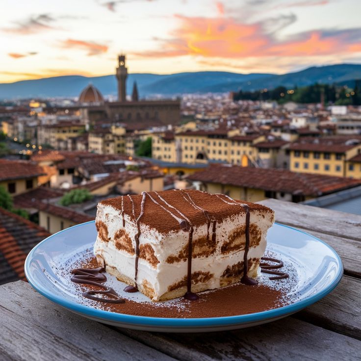

İtalya Yemekleri

Pizza, İtalya’nın dünyaca ünlü en popüler yemeklerinden biridir.Pizza, İtalya’nın dünyaca ünlü ve en popüler yemeklerinden biridir. Napoli’de doğmuş olan bu lezzet, ince hamuru, taze malzemeleri ve özel soslarıyla tanınır. Margherita, Marinara ve Quattro Stagioni gibi klasik çeşitler, hem yerel halk hem de turistler tarafından tercih edilir. İtalya’da pizza, sadece bir yemek değil, aynı zamanda sosyal bir deneyimdir; restoranlarda fırından yeni çıkmış pizzaların tadını çıkarmak, yerel kültürü ve mutfak geleneğini deneyimlemenin bir yoludur. Pizza, İtalyan mutfağının yaratıcılığını ve basit ama etkili lezzet anlayışını en iyi şekilde temsil eder

Makarna çeşitleri İtalyan mutfağının temelini oluştururMakarna çeşitleri, İtalyan mutfağının temelini oluşturan ve ülkenin gastronomik kimliğini yansıtan en önemli lezzetlerdendir. Spaghetti, Penne, Tagliatelle ve Ravioli gibi farklı türler, çeşitli soslar ve taze malzemelerle birleşerek her öğünde eşsiz tatlar sunar. Makarna, hem basit ev yemeklerinde hem de şık restoran menülerinde yer alır ve İtalyan mutfağının yaratıcılığını ve kültürel zenginliğini ortaya koyar. İtalya’da makarna yapmak ve tatmak, sadece bir yemek deneyimi değil, aynı zamanda yemek kültürünü ve gelenekleri keşfetmenin de bir yoludur..

Tiramisu, en sevilen İtalyan tatlılarından biridirTiramisu, İtalya’nın en sevilen ve ikonik tatlılarından biridir. Mascarpone peyniri, kahve ve kakaonun mükemmel uyumuyla hazırlanan bu katmanlı tatlı, hem hafif hem de zengin bir lezzet deneyimi sunar. Restoranlarda ve kafelerde sunulan tiramisu, İtalyan mutfağının hem geleneksel hem de modern tat anlayışını yansıtır. Bu tatlı, sadece bir lezzet değil, aynı zamanda İtalyan kültürünü ve misafirperverliğini deneyimlemenin küçük ama keyifli bir yolu olarak öne çıkar. Tiramisu, ziyaretçilere hem tat hem de görsellik açısından unutulmaz bir deneyim yaşatır..